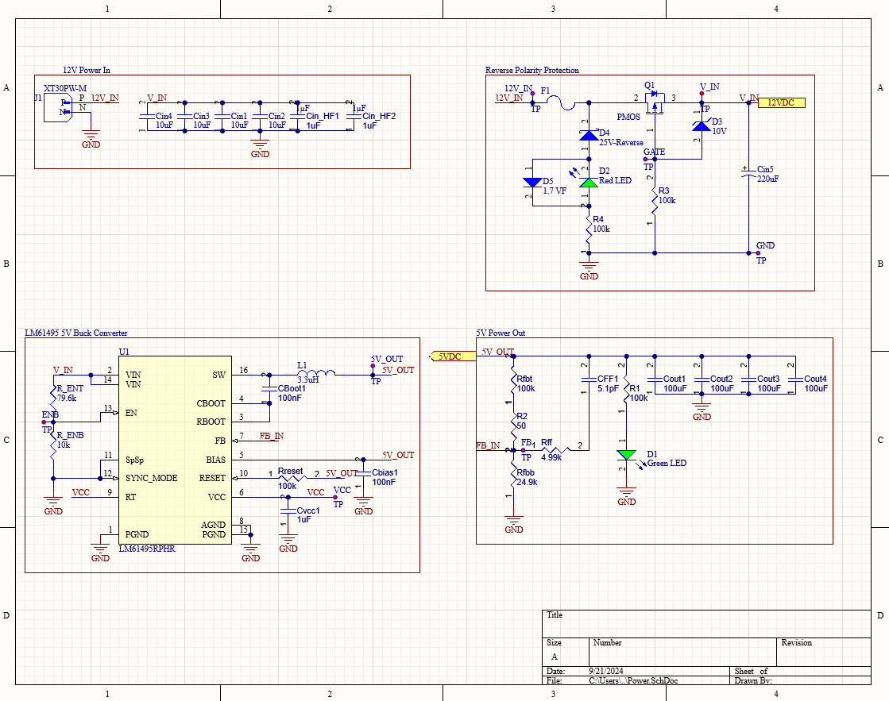
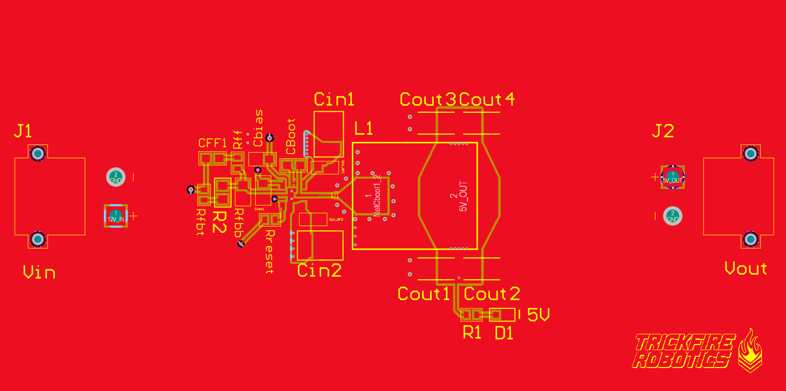
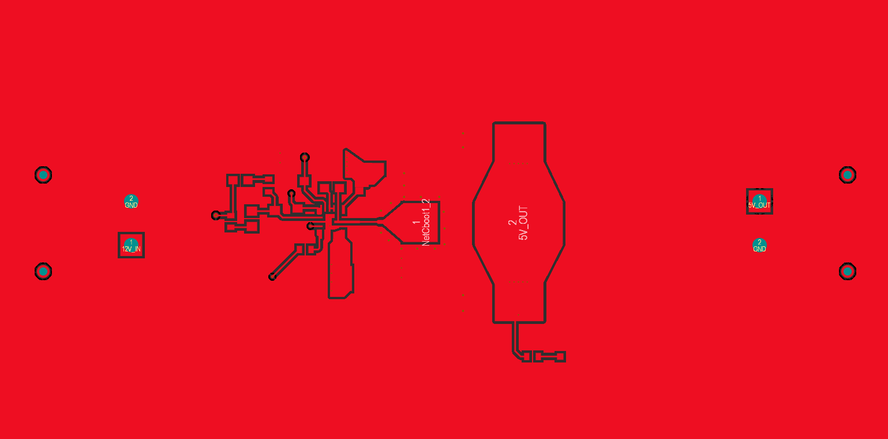
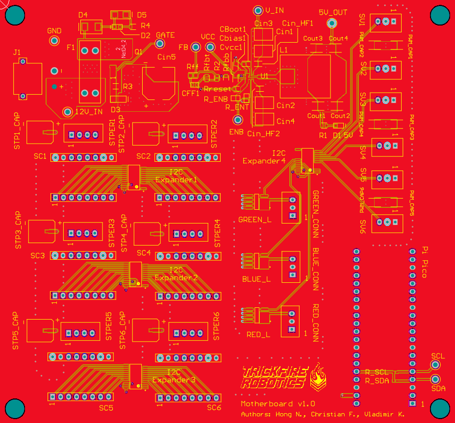

Rover Main Control PCB
Designed the buck converter and connectors module, and routed the Main Control PCB.
Timeline
March 2024 – September 2024
Implementation Details
Tool: Altium and PSpice.
Overview: The main control board is divided into many different parts: buck converter, control, connectors, LED driver, and GPS module. I’m responsible for the buck converter and connectors module.
Associated with: TrickFire Robotics.
3 parts:
- Buck converter:step down from 12V to 5V.
- Connector module:connect the rover's servos and stepper motors to the main control board.
- The main control board:I'm responsible for component placement and routing.
1. Buck Converter
Teammate: Christian F.
Goals
Step down 12V input to 5V with 10A current output to drive the motors and supply power to different parts of the rover.
The result is a PCB that is separated from the main control board to test first before combining it together with the other parts of the main control board.
Process
Tasks Checklist:
- Research components and buck converter overall configuration.
- Design a general schematic and compare it with each other.
- Simulate in PSpice for TI.
- Feedback, improve, and finalize the schematic.
- Components selection (calculate and select components that fit with design criteria).
- PCB first draft.
- Feedback and improvement.
- PCB second draft.
- Feedback and improvement.
- PCB final draft.
- Create a test board.
- Send files to the manufacturer.
- Assemble components.
- Test the new PCB.
Schematic:
Below is the schematic of the buck converter.
Buck Converter Schematic
PCB:
The PCB has 4 layers:
- Signal (top layer)
- Ground
- Input/output signal
- Other signal (bottom layer, reserved for other parts of the main control board).
Below is a picture of each layer:
Top Layer and Top Silkscreen
Top Layer (Signal/GND)
GND Layer
Input and Output (Signal/GND)

Bottom Layer (Signal/GND)
3D View
Outcomes:
Below is the picture of the Buck Comverter PCB fully assembled and tested.
Buck Converter PCB
2. Connector Module
Goals
This part of the PCB involves implementing the A4988 stepper motor drivers and ensuring that each Servo and Stepper motor receives the correct signals and power. Each A4988 driver will be attached to the board using female headers so that faulty modules can be easily swapped. Additionally, I need to choose connectors so that the servos and stepper motors can be easily and securely attached to the board.
Process
Tasks Checklist:
- Research connectors type for the stepper motor drivers, motors, and servos.
- Connectors selection: ensure proper dimensions and ratings.
- Design a general connector schematic.
- Feedback, improve, and finalize the schematic.
- PCB first draft.
- Feedback and improvement.
- PCB second draft.
- Feedback and improvement.
- PCB final draft.
- Create a test board.
- Send files to the manufacturer.
- Assemble components.
- Test the new PCB.
Schematic:
Below is the schematic of the connector module.
Connectors Schematic
PCB:
Unlike the buck converter, this connector part is implemented together with other parts of the main control board to test because it cannot work as a standalone component.
The other parts are currently in development and the final result will be updated here.
3. Main Control PCB
My tasks:
Place components and route the PCB.
My approach:
There are 2 main power areas on the board: 12 V and 5V.
I organized the components so that 12 V is on the left, and the 5 V area is on the right. That way, the power trace of each component is as short and as convenient as possible to its respective power source.
Schematic:
Below is the high-level schematic of the main control board.
Main Control Board High-Level Schematic
PCB:
The PCB has 4 layers:
- Signal (top layer)
- Ground
- Power
- Signal
Below is a picture of each layer:
Top Layer and Top Silkscreen
Top Layer (Signal/GND)

GND Layer
Power/GND Layer
Bottom Layer (Signal/GND)
3D View
Outcomes:
Currently, the PCB is waiting for manufacture. The complete physical board image and testing result will be updated once the PCB is done.